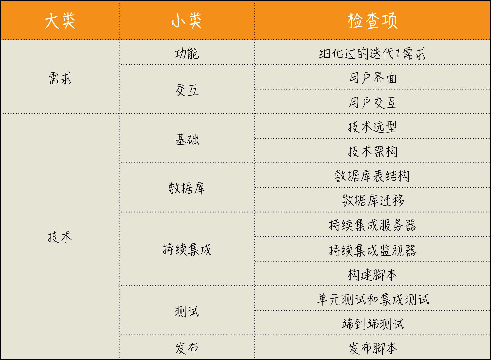

关于“以终为始”，我们已经从各个方面讲了很多。你或许会想，既然我们应该有“以终为始”的思维，那么在项目刚开始，就把该准备的东西准备好，项目进展是不是就能稍微顺畅一点儿呢？
是这样的，事实上这已经是一种常见的实践了。今天，我们就来谈谈在一开始就把项目准备好的实践：迭代0。
为什么叫迭代0呢？在“敏捷”已经不是新鲜词汇的今天，软件团队对迭代的概念已经不陌生了，它就是一个完整的开发周期，各个团队在迭代上的差别主要是时间长度有所不同。
一般来说，第一个迭代周期就是迭代1，然后是迭代2、迭代3，依次排列。从名字上你就不难发现，所谓迭代0，就是在迭代1之前的一个迭代，所以，我们可以把它理解成开发的准备阶段。
既然迭代0是项目的准备阶段，我们就可以把需要提前准备好的各项内容，在这个阶段准备好。事先声明，这里给出的迭代0，它的具体内容只是基本的清单。在了解了这些内容之后，你完全可以根据自己项目的实际情况，扩展或调整这个清单。
好，我们来看看我为你准备的迭代0清单都包含了哪些内容。
一个项目最重要的是需求，而在迭代0里最重要的是，弄清楚第一步怎么走。当我们决定做一个项目时，需求往往是不愁的，哪些需求先做、哪些需求后做，这是我们必须做决策的。迭代0需要做的事，就是把悬在空中的内容落到地上。
在需求做好分解之后，我们就会有一大堆待开发的需求列表。注意，这个时候需求只是一个列表，还没有细化。因为你不太可能这个时候把所有的内容细化出来。如果你做过 Scrum 过程，你的 backlog 里放的就是这些东西。
然后，我们要根据优先级从中挑出迭代1要开发的需求，优先级是根据我们要完成的最小可行产品（minimum viable product，MVP）来确定的，这个最小可行产品又是由我们在这个迭代里要验证的内容决定的。一环扣一环，我们就得到了迭代1要做的需求列表。
确定好迭代1要做的需求之后，接下来就要把这些需求细化了，细化到可执行的程度。前面讲用户故事时，我们已经说过一个细化需求应该是什么样子的，这里的关键点就是要把验收标准定义清楚。
所以，我们要在迭代0里，根据优先级来确定迭代1要做的需求，然后进行细化。
如果你的项目是一个有用户界面的产品，给出用户界面，自然也是要在迭代0完成的。另外，还有一个东西也应该在迭代0定义清楚，那就是用户交互。
我见过很多团队只给出用户界面，然后，让前端程序员或者 App 程序员根据界面去实现。程序员实现功能没问题，但定义交互并不是程序员这个角色的强项，它应该是需求的一部分。
如何让用户用着舒服，这是一门学问。我们在市面上看到很多难用的网站或 App，基本上都是程序员按照自己习惯设计出来的。
现如今，我们可以很容易地在市面上找到画原型的工具，某些工具用得好的话，甚至可以达到以假乱真的地步。如果能再进一步的话，甚至可以用一些模拟服务器的工具，把整个交互的界面都做出来。作为 Moco 这个模拟服务器的开发者，我很清楚，一个原型可以达到怎样的高度。
所以，一个有用户界面的项目需要在迭代0中给出用户界面和用户交互。
技术方面，需要在项目一开始就准备好的事比较多。其中有一些是你很容易想到的，比如：在进入迭代1开始写代码之前，我们需要确定技术选型，确定基本的技术架构等等。也许你还能想到，数据库表结构也是这个阶段应该准备的。
确实，这些东西都应该是在一个项目初期准备的，也是大家容易想到的。接下来，我来补充一些大家可能会遗漏的。
关于持续集成，通常的第一反应是搭建一个持续集成服务器。没错，但还不够。这里的重点其实是构建脚本。因为持续集成服务器运行的就是构建脚本。
那要把什么东西放在构建脚本里呢？最容易想到的是编译打包这样的过程。感谢现在的构建工具，它们一般还会默认地把测试也放到基本的构建过程中。
但仅有这些还是不够，我们还会考虑把更多的内容放进去，比如：构建 IDE 工程、代码风格检查、常见的 bug 模式检查、测试覆盖率等等。
持续集成还有一个很重要的方面，那就是持续集成的展示。为什么展示很重要？当你的持续集成失败时，你怎么发现呢？
一个简单的解决方案是：摆个大显示器，用一个 CI Monitor 软件，把持续集成的状态展示在上面。更有甚者，会用一个实体的灯，这样感官刺激更强一些。
在“以终为始”这个模块中，我们提到集成的部分时，只讲了要做持续集成，后面我们还会再次讲到持续集成，和你说说持续集成想做好，应该做成什么样子。
测试是个很有趣的东西，程序员对它又爱又恨。一般来说，运行测试已经成为现在很多构建工具的默认选项，如果你采用的工具没有这个能力，建议你自己将它加入构建脚本。
让你为一个项目补测试，那是一件非常痛苦的事，如果在一开始就把测试作为规范加入进去的话，那么在边开发边写测试的情况下，相对来说，写测试痛苦度就低多了，团队成员也就容易遵守这样的开发规范。
把测试当作规范确定下来的办法就是把测试覆盖率加入构建脚本。
大多数团队提起测试，尤其是开发者测试，多半想到的都是单元测试和集成测试。把整个系统贯穿在一起的“端到端测试”却基本上交给其他人来做，也有不少团队是交给测试团队专门开发的特定程序来做。
在今天的软件开发中，有一些更适合描述这类测试的方法，比如BDD，再比如Specification by Example。你可以简单地把它们理解成一种描述系统行为的方式。还有一点做得好的地方是，有一些软件框架很好地支持了这种开发方法，比如Cucumber。如果你有这种测试，不妨也将它加入构建脚本。
如果你做的是服务器端开发，多半离不开与数据库打交道。只要是和数据库打交道，强烈建议你把数据库变更管理起来。
管理数据库变更的方式曾是很多团队面临的困扰。好在现在已经有了很多工具支持，比如，我最近喜欢的工具是 flyway，它可以把每一次数据库变更都当作一个文件。这样一来，我们就可以把数据库变更放到版本控制工具里面，方便进行管理。
管理变更有几种不同的做法，一种是每个变更是一个文件，一种是每一次发布是一个文件。各有各的好处，你可以根据需要，自行选择。
技术团队擅长做功能开发，但上线部署或打包发布却是很多团队在前期最欠考量的内容，也是很多团队手忙脚乱的根源。
如果一开始就把部署或发布过程自动化，那么未来的生活就会轻松很多。如果你采用的是 Docker，就准备好第一个可以部署的 Dockerfile；如果是自己部署，就编写好 Shell 脚本。
其实你会发现，上面提到的所有内容即便不在迭代0做，在项目的各个阶段也会碰到。而且一般情况下，即便你在迭代0把这些工作做好了，后续依然要不断调整。但我依然建议你在迭代0把这些事做好，因为它会给你的项目定下一个基调，一个自动化的基调。
最后，我们来看一下，如果在迭代0一切准备就绪，你在迭代1应该面对的日常工作是什么样的。
你从已经准备好的任务卡中选了一张，与产品经理确认了一些你不甚清楚的几个细节之后，准备实现它。你从代码仓库更新了最新的代码，然后，开始动手写代码。
这个任务要在数据库中添加一个字段，你打开开发工具，添加了一个数据库迁移文件，运行了一下数据库迁移工具，一切正常，新的字段已经出现在数据库中。
这个任务很简单，你很快实现完了代码，运行一下构建脚本，代码风格检查有个错误，你顺手修复了它。再运行，测试通过了，但测试覆盖率不够，你心里说，偷懒被发现了。不过，这是小事，补几个测试就好了。一切顺利！
你又更新了一下代码，有几个合并的问题。修复之后，再运行构建脚本，全过，提交代码。
你伸了一个懒腰，完成任务之后，你决定休息片刻。忽然，持续集成的大屏幕红了，你的提交搞砸了。你立刻看了一下代码，有一个新文件忘提交了，你吐了一下舌头赶紧把这个文件补上了。不一会儿，持续集成大屏幕又恢复了代表勃勃生机的绿色。
你休息好了，准备开始拿下一个任务。
这就是一个正常开发该有的样子，在迭代0时，将准备工作做好，后续你的一切工作就会变得井然有序，出现的简单问题会很快地被发现，所有人都在一种有条不紊的工作节奏中。
在这一讲中，我给你介绍了迭代0的概念，它是在正式开发迭代开始之前，进行一些基础准备的实践。我给了一份我自己的迭代0准备清单，这份清单包含了需求和技术两个大方面，你可以参照它设计你自己的迭代0清单。

根据我的经验，对比这个清单，大多数新项目都在一项或几项上准备得不够充分。即便你做的不是一个从头开始的项目，对照这个清单，也会发现项目在某些项上的欠缺，可以有针对性地做一些补充。
如果今天的内容你只记住一件事，那么请记住：设计你的迭代0清单，给自己的项目做体检。
最后，我想请你思考一下，如果让你来设计迭代0清单，它会包含哪些内容呢？欢迎在留言区写下你的想法。
感谢阅读，如果你觉得这篇文章对你有帮助的话，也欢迎把它分享给你的朋友。